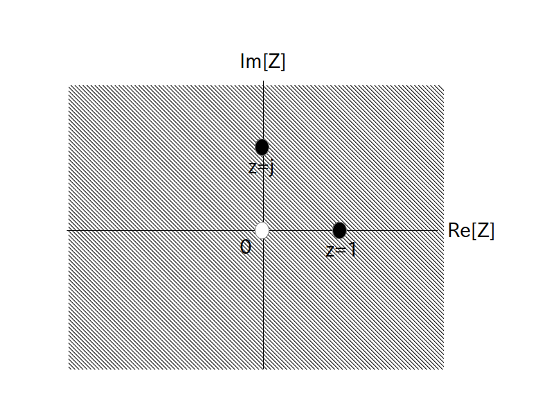

次は実数 $a (\neq 0) $ に対する等比数列 $f[i] = a^i$ の Z 変換を求めてみましょう。
まず $f[i]$ を Z 変換の定義にそのまま代入して $\textrm{F}(z)$ を求めてみます。
\begin{align*} \textrm{F}(z) = \sum_{i=0}^\infty \{ a^i \cdot z^{-i} \} = \sum_{i=0}^\infty \{ a \cdot z^{-1} \}^i \end{align*}例1と違って $\Sigma$ の上の数字が $\infty$ のままなので、無限等比級数の和の収束公式を利用して収束後の式に変形します。
初項 $\beta$、公比 $r$ としたとき、$|r| < 1$ならば
\[ \sum_{i=0}^\infty \beta \cdot r^i \rightarrow \frac{\beta}{1-r} \]それで今回の場合は初項 $\beta = 1$、公比 $r = a \cdot z^{-1}$ なので以下の様に Z 変換が求まります。
の時、もし $|a \cdot z^{-1}| < 1$ つまり $|z| > |a|$ ならば $f[i]$ の Z 変換 $\textrm{F}(z)$ は収束して
\begin{align*} \textrm{F}(z) = \frac{1}{1-a \cdot z^{-1}} \end{align*}収束領域は収束条件より $|z| > |a|$ となる
逆変換については、もし Z 変換が
\[ \textrm{F}(z) = \frac{1}{1-a \cdot z^{-1}} \]の形で与えられている時、逆変換は $f[i] = a^i$ となります。
さて収束領域 $|z| > |a|$ についてもう少し考えてみましょう。
この収束領域を図で表したのが以下の図1で、図中の半径 $|a|$ の円の「外側」が収束領域になります。
※ 半径 $|a|$ の円上の点は収束領域では無いので注意して下さい。
半径 $|a|$ の円の「外側」が収束領域
では試しに $z=2a$ をZ変換に代入してみましょう。
図1を見る限り $z=2a$ は収束領域に含まれています($a$の符号により位置が変わります)ので、$\textrm{F}(z)$ の式にそのまま $z=2a$ の値を代入して
\begin{align*} \textrm{F}(2a) = \frac{1}{1-\frac{a}{2a}} = \frac{1}{1-\frac{1}{2}} = 2 \end{align*}が求める答となります。
なお円よりも内側の $z$ を代入した場合は、そもそも級数が収束しませんので「発散する」が答となります。